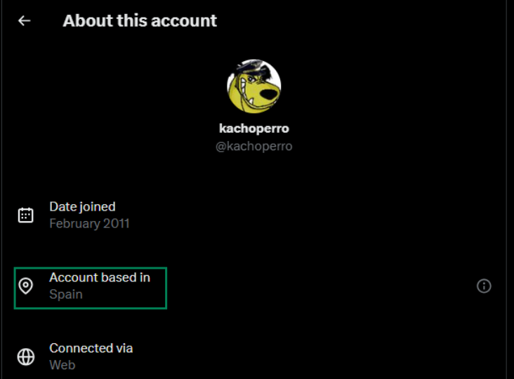
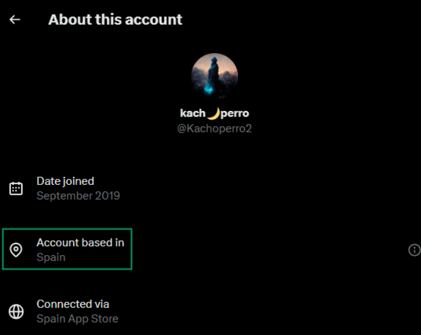
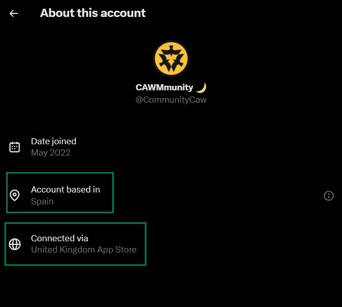
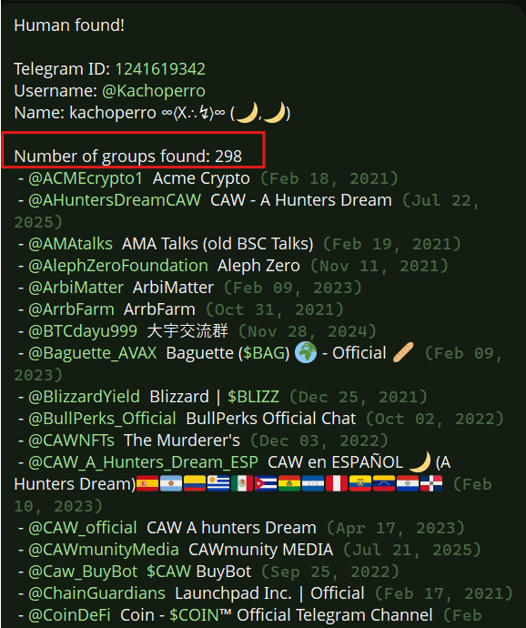
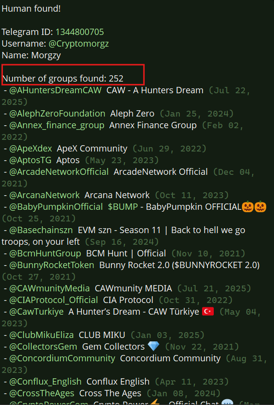
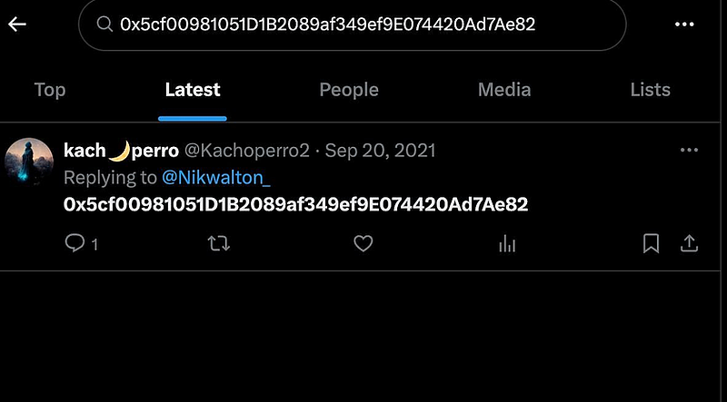
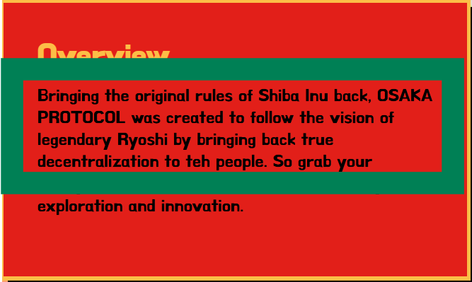
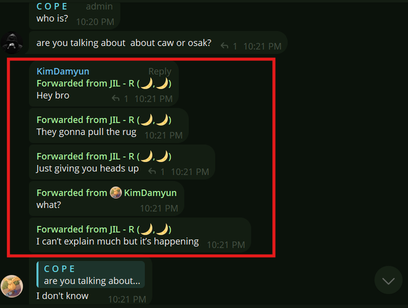

OSAK.CAWMMUNITY/kachoperro
OSAK.CAWMMUNITY/kachoperro
I feel burned v2.
authored by an anti-scammer
— — — — — — — — — — — — — — — — — — — — — — — — — — — — — — — — — — — — — —
God,
please have mercy on us all
— pleb
— — — — — — — — — — — — — — — — — — — — — — — — — — — — — — — — — — — — — —
kachoperro,
relying solely on past glory, reputation, or elite status can lead to disaster when opponents adapt and circumstances change.
— the Spanish Armada 1588
— — — — — — — — — — — — — — — — — — — — — — — — — — — — — — — — — — — — — —
to teh ppl of Osaka,
Keeping this message clear for everyone watching closely.
All ppl deserve transparency from those in control.
Control without accountability weakens trust over time.
Honest leadership knows when its moment has passed.
Open systems should never hinge on one person.
Power is safest when it is shared.
Ego should not outweigh the collective good.
Respect is earned through actions, not titles.
Real strength is shown in stepping aside.
Only then can a community fully thrive.
Give space for new voices to contribute.
In decentralized spaces, authority is temporary.
Voluntary transition shows integrity.
Every leader is ultimately a steward, not an owner.
Understanding this keeps movements healthy.
Passing responsibility forward can be an act of courage.
Trust grows when control is relinquished.
Holding keys forever invites doubt.
Empowerment begins with letting go.
Know when it’s time to move on.
Encourage others to step up.
Yield authority with dignity.
Step aside for the strength of the whole.
This is not a lore drop.
This is a forensic record you can verify line by line.
But I am also correcting the story up front..
FACT: I originally leaned too hard on the visual of LP removals and let that framing imply malicious intent.
FACT: After deeper checks, the ded wallet LP removals line up with normal farm exit mechanics in 3 of 4 cases, landing 3 to 16 blocks after SR1 Withdrawn events.
INFERENCE: That is consistent with the standard flow of exiting or unstaking LP from a farm and then removing liquidity.
WHY THIS MATTERS: Because LP removal by itself is not proof of a rug, and it would be dishonest to frame it that way.
Still…
FACT: The core risk of OSAK is not LP farming is a scam.
That statement was a piece, not the whole point of this Medium.
FACT: The bigger concern is centralization and single point of failure custody and it is visible in OSAK even if every LP move is normal.
FACT: OSAK markets itself as a rebirth of true decentralization.
INFERENCE: The setup is dangerously centralized and that makes outcomes
steerable in a way that does not require an admin backdoor and that is where kachoperro being active in the environment matters.
So the point of this piece is not that LP farming is a scam.
The point is bigger and more important.
The core risk is centralization and single point of failure custody.
WHY THIS MATTERS: A project can pump and still be structurally fragile. Price does not remove custody risk. If safety depends on one key, one wallet, or a tiny cluster never moving, then the downside is one signature away.
So…
We anchor the investigation to three hard points:
the OSAK contract
the OSAK/WETH pool
and the ded.eth wallet
From there, we document four things the chain will not argue with:
FACT: the on chain identity plumbing around kachoperro.eth
FACT: the measurable value flow bridge between a historical kachoperro resolved address and ded.eth
FACT: the four 2023 remove liquidity transactions credited to ded.eth and the routing footprint after them
FACT: the structural centralization surfaces inside OSAK that exist even if every LP move is normal
The conclusion we draw is not “trust me.”
It is this…
If you believe narratives, you get farmed,
If you verify txids,
you get free.
— — — — — — — — — — — — — — — — — — — — — — — — — — — — — — — — — — — — — —
the following are screenshots taken on 11/22/25 right after the release of X app locations and his telegram user info below:





— — — — — — — — — — — — — — — — — — — — — — — — — — — — — — — — — — — — — —
So here is the proof I promised
the research you, the holder, should have done
but which has now been done for you
Make a mess trying to figure it out if you have to,
but figure it out first before you upload your life savings.
From this moment forward, move wiser
Protect your trust
Guard your community
-XT
— — — — — — — — — — — — — — — — — — — — — — — — — — — — — — — — — — — — — —
On chain Evidence
— — — — — — — — — — — — — — — — — — — — — — — — — — — — — — — — — — — — — —
1. kachoperro.eth wallet address
First we start at the beginning with the identity kachoperro tried to burn and hide, kachoperro.eth.
On 2023–03–01 the resolver was cleared so it stopped resolving, then the ENS NFT and registry ownership were pushed to dead addresses.
Meaning the public handle was intentionally made unusable, leaving only an on chain trail behind.
here is a detailed history of the kachoperro.eth wallet
(i suggest to use ai for translation):
FACT: kachoperro.eth namehash node =
0x256d254e0c7774b2515300fcd0bfe433756ae31dfc17ca6e31c08e1c5545b8c3
FACT: 2021–06–03 the name becomes live and resolves (setup)
BN 12,561,928
UTC 2021–06–03 13:55:03
TXID 0xdc8f2590bc6a2741f5b7ce1c6b3feb74d7bad0ab1bbd1b8d9a39c2c08b54a18b
FACT: at setup, kachoperro.eth resolved to
0x37b3fae959f171767e34e33eaf7ee6e7be2842c3
FACT: 2022–08–22 custody transfer of the .eth NFT
BN 15,387,461 UTC 2022–08–22 01:43:30
TXID 0x254b1d21e9ab13356b8cf5336c7e0f52a9043f8b4c4a52392768ec910952108f
BaseRegistrar transfer 0x37b3… to 0xb9f0…
FACT: 2023–03–01 resolver cleared, name stops resolving
BN 16,733,259 UTC 2023–03–01 10:44:35
TXID 0xfa989753ffc522a2f96253bb8dce736fa867b0de08f10245c187758e35ea9d6d
Resolver set to 0x0000000000000000000000000000000000000000
FACT: 2023–03–01 BaseRegistrar burn to dead
BN 16,733,347 UTC 2023–03–01 11:02:23
TXID 0xc3b5476173107d7e5ffdd88f204d837f4d13fc1b08cecf16b26f6a1514361c28
BaseRegistrar transfer to 0x000000000000000000000000000000000000dead
FACT: 2023–03–01 ENS Registry owner set to dead
BN 16,733,356 UTC 2023–03–01 11:04:23
TXID 0x95c1346b7614ffab076ff49df425646b857ba4814589b67c7ddba44feb8e540a
WHY THIS MATTERS: This name no longer resolves and cannot be managed normally. If a public identity is used as credibility, then turning it off leaves the community with story but no verifiable handle.
Now the bridge this investigation uses.
FACT: the wallet kachoperro.eth historically resolved to 0x37b3, has multiple direct ETH transfers with the seed wallet ded.eth 0x5cf0.
WHY THIS MATTERS: It is a measurable on chain association between a historical ENS identity pointer and the wallet later analyzed for $OSAK liquidity behavior.
FACT: inbound to ded.eth from 0x37b3 includes
2020–11–17 18:38:45 UTC tx 0x3937942f… 0.25 ETH
2021–04–29 19:05:42 UTC tx 0x286ed0d3… 0.255 ETH
2021–06–11 17:49:03 UTC tx 0x3de59286… 0.27 ETH
2021–06–23 20:16:55 UTC tx 0x1ee03f5b… 0.3 ETH
2021–07–02 10:02:28 UTC tx 0xf7572cc7… 0.053996475502780819 ETH
FACT: outbound from ded.eth to 0x37b3 includes
2021–06–12 00:18:12 UTC tx 0x5adf58ff… 3.7277 ETH
2021–06–23 22:59:00 UTC tx 0x0e5f3aa5… 0.321373541239339966 ETH
FACT: totals for the sample bridge shown above
Total inbound 1.128996475502780819 ETH
Total outbound 4.049073541239339966 ETH
INFERENCE: This value flow does not prove a single human identity.
WHY THIS MATTERS: It does prove repeated direct interaction between those two addresses, which is enough to justify watching ded.eth with higher scrutiny than a random wallet.
— — — — — — — — — — — — — — — — — — — — — — — — — — — — — — — — — — — — — —
2. ded.eth wallet address
===============================================================

the screenshot above references an eth wallet address later named ded.eth and posted by kachoperro himself on Sept 20,2021.
No mainstream ai back then.
its authentic.
this screenshot is so important
FACT: ded.eth wallet address
0x5cf00981051D1B2089af349ef9E074420Ad7Ae82
FACT: there is also a screenshot in circulation showing this address was posted by kachoperro in 2021.
FACT: that is a public self association.
WHY THIS MATTERS: Because it would tie narrative identity to a specific address without needing guesswork.
Note: without kachos wallet address screenshot, there would be no current way to tie kacho to OSAK by identity
but his own ego got in his way…
God is good!
Now for the chain facts that do not depend on screenshots..
FACT: four OSAK LP remove liquidity events in 2023 paid ded.eth a total of 56.504602862127677287 ETH
FACT: exact txids with UTC times and block numbers
2023–06–27 17:01:47 UTC BN 17572038
0xec99100265b60dcf6ff6e8ac70e3448c42cc3667b036980e6fde76e3f714a32e
5.235529480991319632 ETH
2023–08–31 17:32:35 UTC BN 18036070
0x311cd39c6ab365c2a771403ae717379d845948ec87d45cb2c74f48c8f07bdf04
20.199927860890171527 ETH
2023–09–11 17:05:59 UTC BN 18114486
0xf0c388324b9879325366eb6ccb7033e4ef70dbb8a09d64cb81983d30f9a3b847
22.265035366083258234 ETH
2023–10–23 17:50:59 UTC BN 18414569
0x7ba7dedf08d6b49854c598071555687d0694eb26cc51d8b8a7307b9bcfeac315
8.804110154162927894 ETH
FACT: farm exit alignment for 3 of 4
RemoveLiquidity 18036070 vs SR1 Withdrawn 18036054 delta 16 blocks
RemoveLiquidity 18114486 vs SR1 Withdrawn 18114472 delta 14 blocks
RemoveLiquidity 18414569 vs SR1 Withdrawn 18414566 delta 3 blocks
WHY THIS MATTERS: This is consistent with a normal LP farmer flow.
So the honest claim is not he rugged.
The honest claim is he had scale,
he exited in chunks,
and in a thin market those moves matter.
FACT: routing footprint after removals shows heavy use of infra and aggregators, not a single clean off ramp line
Major counterparties flagged in the trace lane include:
FACT:1inch router 0x1111111254eeb25477b68fb85ed929f73a960582
FACT: Uniswap Uni Router 0x3fc91a3afd70395cd496c647d5a6cc9d4b2b7fad
FACT: SynapseRouter 0x7e7a0e201fd38d3adaa9523da6c109a07118c96a
FACT: NineInchRouter 0xa79882a5bcd455c6e582dad43f3f3f2c9c8264eb
FACT: Blur infra addresses 0x0000000000a39bb272e79075ade125fd351887ac
WHY THIS MATTERS: It shows sophistication and flexibility. A wallet that can remove LP, receive ETH, and route through aggregators can influence price action in low liquidity conditions without needing admin privileges.
FACT: these removals used permit style router paths in the broader lane.
INFERENCE: permit flows mean there may be no prior approval breadcrumb.
WHY THIS MATTERS: approval watching can miss the true moment of risk.
The decisive signal becomes router removeLiquidity calls themselves.
— — — — — — — — — — — — — — — — — — — — — — — — — — — — — — — — — — — — — —
3. OSAK identifiers and the real risk surface
— — — — — — — — — — — — — — — — — — — — — — — — — — — — — — — — — — — — — —

FACT: OSAK token contract on Ethereum =
0xa21Af1050F7B26e0cfF45ee51548254C41ED6b5c
FACT: OSAK WETH Uniswap V2 pool =
0x05c024b441d2c288c2729b484bd4bcef3596aa51
FACT: project messaging claims OSAK is a simple ERC20 that cannot be adjusted or changed or rugged.
INFERENCE: the token contract does appear plain and fixed supply with no obvious classic admin levers in the verified view.
WHY THIS MATTERS: That does not remove risk, it relocates it. If the code is boring, the real danger is custody and structure like who holds the LP, who controls key contracts, and how easily liquidity and distribution can be steered.
Now the issues that matter most…
A. single point of failure liquidity custody
FACT: LP token holder distribution snapshot
RYOSHI Wallet 0xb8f226ddb7bc672e27dffb67e4adabfa8c0dfa08
holds 99.48289583609217 percent of LP
BURN addresses hold about 2.820153983046938e-05 percent of LP
SR1 holds 0.3244567927801348 percent of LP
FACT: The centralization severity is extreme. Burn addresses hold about 0.000028 percent of LP while the Ryoshi wallet EOA holds about 99.48 percent.
WHY THIS MATTERS: Liquidity safety depends on one wallet never moving. That is not burned. That is “please trust this one address forever” and it creates a single point of failure.
That is the definition of single point of failure.
And this is where the lore becomes dangerous.
FACT: (osaka.win context): Osaka’s own docs say “73.854% of OSAK is burned to the dead address or sent to Ryoshi,” and they explicitly label “Burned LP to Ryoshi” and “50% Supply to Ryoshi.”
INFERENCE: That Ryoshi wallet had credibility because it was linked to Ryoshi during active SHIB era usage, and that link is what gave people confidence to trust it.
WHY THIS MATTERS: We are now years later. Ryoshi is not actively behind anything publicly and nobody can prove who controls that key today. So regardless of the origin story, that wallet is now a single point of failure and trust is being asked of an address rather than a mechanism.
B. Paperdrop distribution Outcome vs Narrative
FACT: The Paperdrop was pitched as a 30 percent distribution event to make the supply feel community owned, not controller owned.
FACT: That 30 percent Paperdrop bucket totals 300,000,000,000,000 OSAK, but the realized on chain footprint was tiny: only 11,464,118,091,014.547 OSAK was actually claimed, which is 3.8213726970048487 percent.
FACT: The remainder, 288,535,881,908,985.44 OSAK, flowed back to the deployer or controller, which is 96.17862730299515 percent, meaning the distribution re centralized in practice instead of decentralizing.
WHY THIS MATTERS: a distribution can look “community wide” in narrative while remaining effectively centralized in outcome. Even if parts were later burned or routed into incentives, the practical result is that very few people ended up holding that airdrop supply, and the controller regained the overwhelming majority. That concentrates power, increases the ability to steer outcomes, and raises manipulation risk even if nobody is cheating.
C. incentives and admin surfaces
FACT: there were farm contracts SR1 and SR2, and the ded wallet behavior is consistent with staking and exiting LP from SR1 and later exiting, then removing liquidity.
FACT: SR2 is not an LP drain lever, but it is custodial for rewards because recoverERC20 for OSAK and WETH succeeds on SR2, meaning an owner key can pull reward token balances held there even if LP recovery is blocked.
WHY THIS MATTERS: Incentive contracts introduce an admin key into the system. Any owner key is a control surface and a compromise target. Even when LP itself cannot be drained, reward balances and incentive timing can still be influenced by whoever controls that admin pathway, which adds centralization risk on top of the liquidity custody risk.
D. thin conditions amplify whale influence
FACT: at the time of capture, the main pool showed modest liquidity and very low 24h volume in the public stats lane.
WHY THIS MATTERS: Thin flow is where whales matter most. Low volume means fewer natural buyers and sellers to absorb size. Moderate liquidity means slippage spikes fast. In that environment, relatively small trades can move price, and when stress hits, exits get ugly because the book is not there to catch you.
Even more so, there are discrepancies between the projects own words and what is actually on chain.
FACT: The OSAK launch text frames LP as being sent to an old SHIBA Ryoshi wallet for approval and a forever hold and frames the farm as locks until the end of the farm term.
WHY THIS MATTERS: Readers interpret that as a trustless guarantee.
FACT: On chain LP burned is not true in the strict sense and the guys behind this know this.
FACT: The LP was minted to the deployer and later transferred deployer to the Ryoshi wallet so it is custody not burn.
WHY THIS MATTERS: Custody is a key risk. If the controlling key moves or is compromised the guarantee disappears.
FACT: The Mephisto Medium narrative implies broad distribution plus burn or unclaimed handling but the actual on chain Paperdrop outcome is re centralized.
FACT: About 96.1786 percent of the 30 percent airdrop bucket flowed back to the controller or deployer with only about 3.82 percent reaching claimers.
Stop and read that again.
FACT: The OSAK Medium text mixes burn remaining 23 percent messaging around unclaimed distribution, which reads like any unclaimed airdrop supply is automatically removed from circulation for the communitys benefit.
WHY THIS MATTERS: When the story implies broad distribution plus automatic burn safety, readers assume supply and power are dispersed. But if unclaimed distribution can route back to a controller, the outcome can look community wide while control remains concentrated. That gap between narrative and outcome increases manipulation risk even if nobody is cheating.
FACT: On incentives, SR2 is not an LP rug vector but it is custodial for rewards. recoverERC20 for OSAK and WETH succeeds on SR2 which means the SR2 owner key can pull reward token balances that accrue or land there even if LP itself cannot be recovered.
WHY THIS MATTERS: This adds another key based point of control. Any owner key is a compromise target, and even honest operators become a risk if that key is later lost, sold, or taken. It also means incentive flows can be influenced by whoever controls that admin pathway.
FACT: On monitoring approvals, the traced removals used removeLiquidityETHWithPermit, so there may be no prior approval breadcrumb at all.
WHY THIS MATTERS: A lot of people watch Approve events to spot danger, but permit based removals can skip that trail. The decisive signal becomes the router removeLiquidity calls themselves, so approval monitoring alone can give a false sense of safety.
— — — — — — — — — — — — — — — — — — — — — — — — — — — — — — — — — — — — — —
Warnings that remain true even after correcting the farm framing
— — — — — — — — — — — — — — — — — — — — — — — — — — — — — — — — — — — — — —
Warning 1
Liquidity risk is real even if the ERC20 code is immutable
WHY THIS MATTERS: holders get hurt by liquidity leaving, volume thinning, and exits widening, not only by contract level backdoors.
Warning 2
Repeated large LP withdrawals to a single wallet are a measurable risk indicator
WHY THIS MATTERS: Call it strategy, call it farming, call it normal.
In thin conditions the community still pays the cost. Liquidity pulls make price easier to move and harder to exit, and that impact is real regardless of intent.
Warning 3
Forever hold narratives are not the same as enforced locks
WHY THIS MATTERS: a timelock contract is enforcement. a wallet is trust. do not confuse the two.
Warning 4
Complex cross chain listings increase novice risk
WHY THIS MATTERS: Multiple chains and bridge paths multiply failure modes. People buy the wrong asset, follow the wrong contract, route through the wrong adapter, or get stuck in bridge risk they never modeled.
— — — — — — — — — — — — — — — — — — — — — — — — — — — — — — — — — — — — — —
Ending summary
— — — — — — — — — — — — — — — — — — — — — — — — — — — — — — — — — — — — — —
Hello frens,
If you read nothing else, remember what this piece actually did.
It reduced the story to artifacts.
We pinned OSAK to its contract and its pool. We pinned ded.eth to four 2023 remove liquidity events with block numbers, UTC timestamps, and the exact ETH extracted. We pinned the kachoperro thread to an ENS trail that was intentionally made unusable, yet still leaves behind a measurable bridge of direct ETH transfers between 0x37b3 and 0x5cf0 that you can verify.
We also corrected the one part that was overstated. The farm alignment matters, and LP removal alone is not proof of a rug.
But the larger risk does not disappear because the larger risk is structural centralization. When 99.48 percent of LP sits in one wallet, safety becomes faith in a key, not enforcement. When a 30 percent paperdrop bucket results in only 3.82 percent reaching claimers and 96.1786 percent flowing back to a controller, distribution becomes fragile in outcome, not just in narrative. When permit based removals can skip approval breadcrumbs and whales can exit in chunks through routers and aggregators in thin conditions, price can be steered without any admin backdoors.
Nothing here requires belief. Only replication.
GOD BE WITH YOU
-XT
